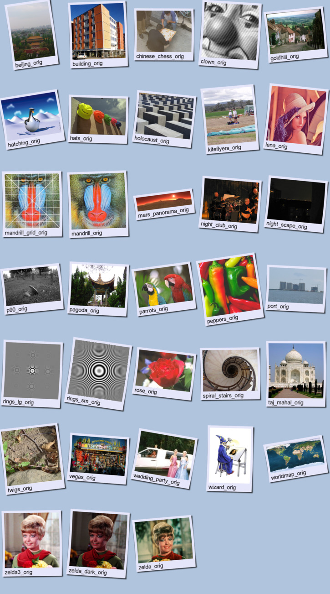
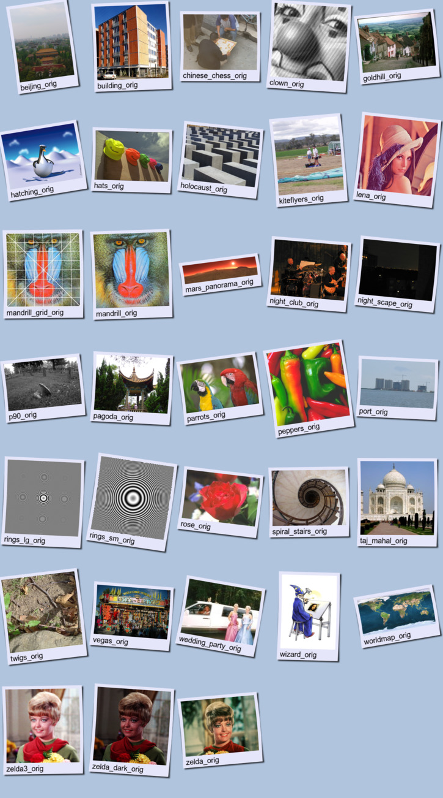

ImageMagick Examples Preface and Index
ImageMagick Examples Preface and Index Directory Index of Photo Store
Directory Index of Photo Store- Fancy Polaroid Photo Index (of original
images)
These photographs are used as part of detailed examples of image processing using ImageMagick.
Many of the images are standard images used in research papers on image processing, including "lena", "mandrill", "tiffany", and "zelda". Others are personal photos taken with a digital camera, including "holocaust", "chinese_chess", "pagoda", "spiral_stairs". Finally a couple of special situation images are present, including "rings" for image scaling aliasing tests, as well as "night_club" and "night_scape" of low light conditions.
Details are to the source of the image and posible modifications made to non-original images are given in the "README" file in the directory.
The following are the photos marked as "original" in this directiory. There are many other photos, as well a duplicates of these at smaller sizes for more direct use in examples. See Directory Index for a full index of all images in this directory.Enjoy! -- Anthony
Click on a photo below to see the full sized "original"
image

